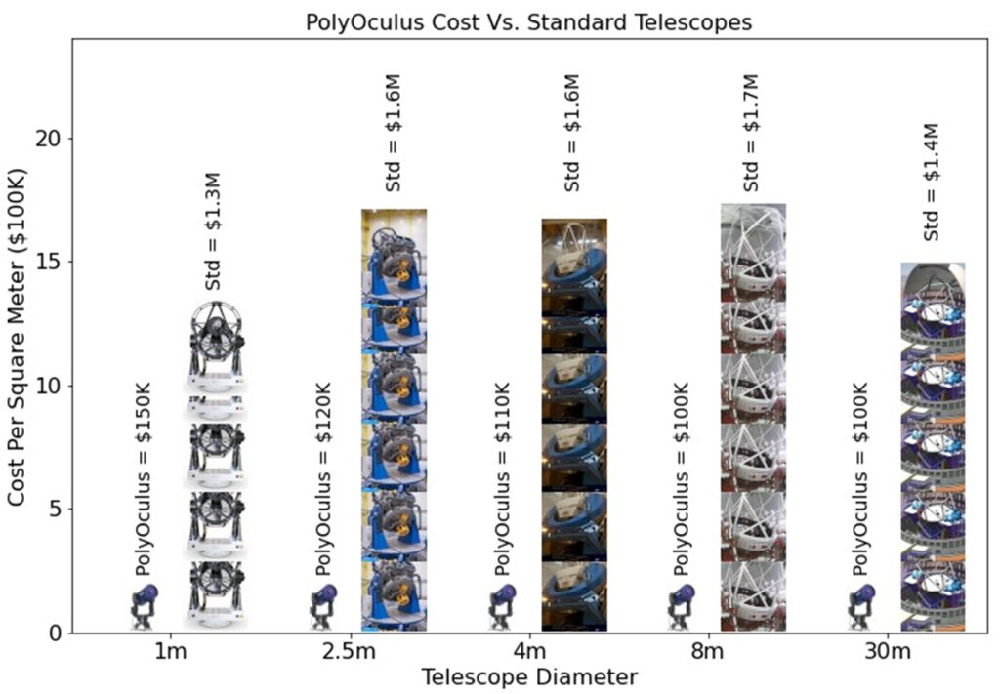
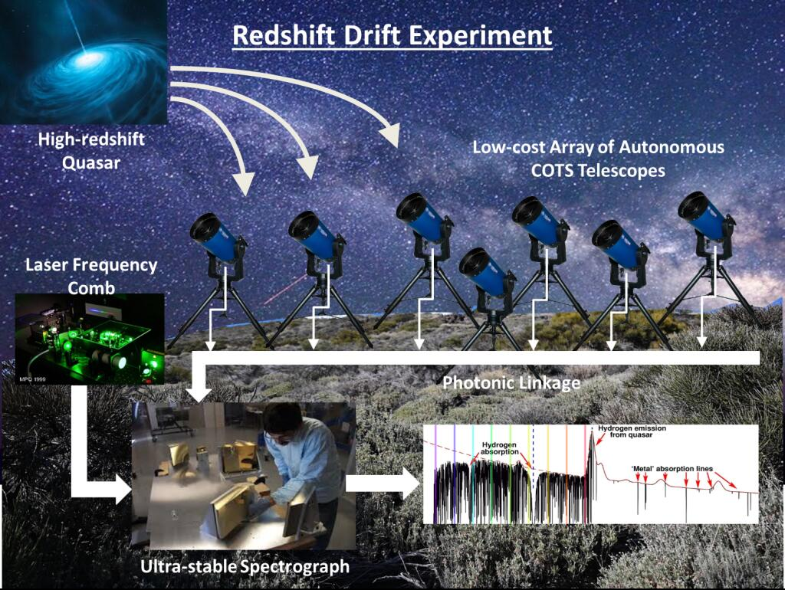

UCF Astrophotonics Lab · CREOL
Aperture is expensive. The cost of a conventional telescope rises steeply with mirror diameter, which is what makes very large single-aperture instruments so rare. PolyOculus takes the other route: link many low-cost, commercially available telescopes together with optical fibre so the array behaves as one much larger collecting area.

The array's driver is a redshift drift experiment — watching absorption features in the spectra of high-redshift quasars shift over time, a direct measurement of cosmic acceleration rather than an inferred one. That needs an enormous amount of collected light and an extremely stable spectrograph, fed through photonic linkage and calibrated against a laser frequency comb.

I contribute mount control and pointing automation for the array. An array only pays off if every telescope in it acquires and tracks its target without someone standing at each one, so the pointing has to be reliable and hands-off across the whole set.
See also photonic lanterns and CELERIS.